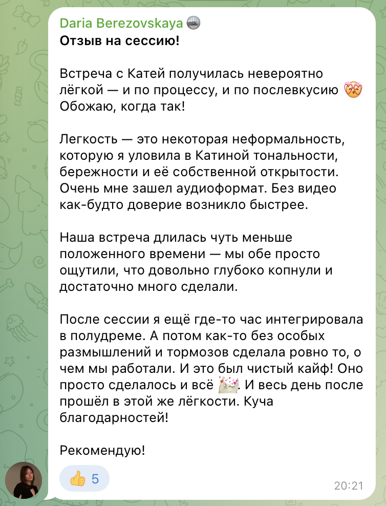
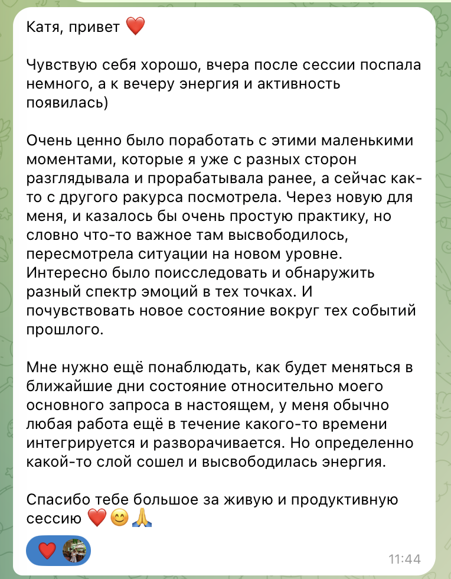
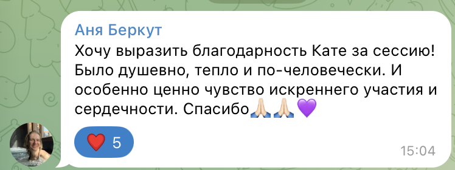

Work through your emotions
We trace what’s bothering you back to where it started and release the emotional charge from those situations. The work is focused: we don’t jump from topic to topic, we stay with what you came with.
“We worked on a difficult situation that had been affecting my life for a long time — and made real progress in a single session. As a colleague, I can vouch for the precision of Kateryna’s work.”

What is RET
RET (Resource-Emotional Transformation) lets us explore your problem in depth and break it down into aspects. Each aspect usually comes with its own emotional state — we call it an emotional pattern.
These patterns don’t come from nowhere: our reactions are usually formed in childhood, most often before the age of 7. We find the specific situation where the pattern began and release its emotional charge. After that, the problem stops being a problem and becomes simply a task: your emotions no longer block you.
This isn’t years of talking: almost any issue can start to shift in a single session, and change more deeply over 3–5.
What you can bring to a session
You don’t need to know in advance exactly what you want to work on. If something troubles you, gets in the way of your life or keeps happening again and again, that’s enough. At the start of the session we’ll sort it out together and put it into a clear request.
Relationships
- Arguments and conflicts with a partner, children, parents, colleagues
- Old resentment that won’t let go
- Jealousy and envy
- Breakups, betrayal, being left
- Someone close does something that hurts you — we work with your feelings
Loss and loneliness
- Grief after the death of a loved one
- Loneliness, feeling unwanted or rejected
- Living far from home without your people around
Fears and anxiety
- Anxiety, panic, constant worry about the future
- Specific fears that make everything freeze inside
- Fear for loved ones, fear of death
- Fear of making a mistake
Emotions that are hard to handle
- Anger, irritation, outbursts
- Guilt, including towards your child
- Shame and self-doubt
- Apathy, self-pity, the feeling that “it will always be like this”
Money and work
- Never enough money, arguments about money, shame about your finances
- Money beliefs that hold you back
- Unfairness at work, criticism, being fired
Habits and action
- “I want to but I can’t” and “I have to but I don’t want to”: procrastination, laziness
- Habits that are hard to stop, and addictions
Choices and dead ends
- You can’t decide: stay or leave, A or B
- Feeling “trapped in a cage” with no way out
How you see yourself
- “I’m not pretty / good enough”, painful reactions to criticism of your looks
- Childhood rules and beliefs that still run your life
What changes after sessions
Everyone’s path is different, but this is what clients notice most often.
“The meeting with Kateryna was incredibly light — both the process and the aftertaste. Afterwards, without overthinking or holding back, I simply did exactly what we had worked on.”
Old reactions stop firing
Situations and people that used to cut deep feel calmer now.
Memories lose their sting
You remember what happened, but the pain and tension you carried fade away.
Energy and lightness come back
The energy that went into worrying is freed up for living.
Taking action gets easier
Things you’ve put off for a long time finally get done — easily, without forcing yourself.
Reviews






Screenshots of real messages and comments from clients (in Russian and Ukrainian). Scroll sideways to see them all.

About me
My name is Kateryna. I found RET in 2018–2019 — first as a client. Before that I had seen several specialists about different issues and tried different approaches. But every time the conversation touched the most painful experience from my childhood, it only got harder: talking about it seemed to plunge me back into that pain.
With RET the opposite happened. After each session the memories became lighter and less painful — as if whole layers were being removed. I remember what happened, but the pain and fear I had carried in my body are gone. A few sessions changed more than the months before.
I was struck by how precisely the method works: we don’t discuss everything at once — we take a specific issue, break it down into aspects and find exactly the experience where it all began.
In 2020 I trained in the method with trainer Anna Aksyonova, and since then I have given more than 300 sessions to more than 50 clients. I also teach Kundalini yoga on Koh Phangan. I offer sessions in English, Ukrainian and Russian.
 RET “Practitioner” certificate2020 · 44 hours of training · view
RET “Practitioner” certificate2020 · 44 hours of training · view
Prices
Online or in person on Koh Phangan
Intro call
15 minutes, online Free We’ll get to know each other and decide where to startOne session
Online, 1.5 hours 50 €4 sessions
Online, to work through a topic in depth 150 € 37.50 € per session — save 50 €In person
On Koh Phangan · 1.5 hours 3,000 THB ≈ 80 €FAQ
What people usually wonder about before the first session
How many sessions will I need?
It’s different for everyone: it depends on your request and how many topics you want to work through. Usually 1 to 5 sessions are enough. On the free intro call I’ll tell you what to expect in your case.
Do I have to share every detail?
No. Only what you’re ready to share. You decide how much to say out loud.
What if it gets hard or I cry?
That’s normal: tears often mean an emotion is finally being released. I’m with you the whole time, we go at your pace, and we end the session in a calm state.
Are you a psychologist or therapist?
No. I’m a certified RET practitioner. This isn’t psychotherapy: we don’t go over the past in long conversations, we release the emotional charge from specific situations.
Does it work online?
Yes. Sessions are held as audio calls, and many people find it even easier this way: you’re at home, in a safe place, and can fully focus on yourself. No preparation needed — just a quiet place and headphones.
When can we have a session?
I live in Thailand but work with people in different countries. Message me — we’ll find a time that suits us both.
How does payment work?
Before the session, by any of the methods listed under Prices. If something changes, you can reschedule for free with 24 hours’ notice.
Is it confidential?
Yes. Everything you share stays between us.
Who is RET not for?
RET does not replace psychological, psychiatric or medical care. If you are in acute crisis, have a diagnosed mental disorder or take psychiatric medication, please see a doctor first.
Let’s start with an intro call
Tell me in a few words what’s bothering you. On the free intro call I’ll honestly tell you how I can help and how many sessions you might need. Message me even if you’re unsure.